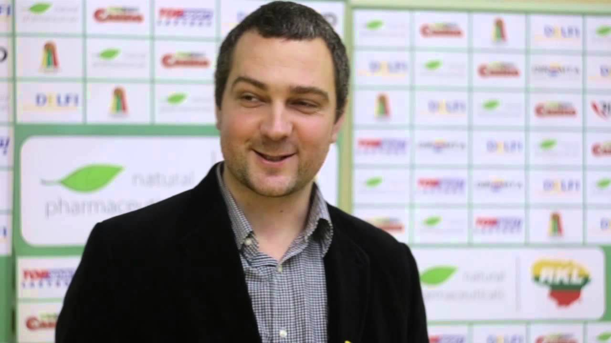

Baltasis cementas: dekoratyvinių rūšių, Turkijos mišinių maišeliuose naudojimas, prekių ženklų „Shchurovsky cementas“ ir „Adana“, baltojo cemento savybės
 Apartamentai Namas Kraštovaizdžio dizainas Pastatai Remontas Dizainas ir išdėstymas Durys ir arkos Apšvietimas Baldai Tekstilė Įėjimas salėje Svetainė Miegamasis Spinta Lodžijos ir balkonai lt.decorexpro.com Remontas Sausi statybiniai mišiniai Cementas
Apartamentai Namas Kraštovaizdžio dizainas Pastatai Remontas Dizainas ir išdėstymas Durys ir arkos Apšvietimas Baldai Tekstilė Įėjimas salėje Svetainė Miegamasis Spinta Lodžijos ir balkonai lt.decorexpro.com Remontas Sausi statybiniai mišiniai Cementas
Baltasis cementas: savybės ir taikymas
Kompiuterių parduotuvių lentynose pirkėjas gali rasti ne tik paprastą cementą, bet ir baltą apdailos medžiagą. Medžiaga labai skiriasi nuo kitų naudojamų šaltinių komponentų cemento sudėties, kainos, kokybės, gamybos technologijos ir apimties.
Prieš pradedant dirbti su šios rūšies statybinėmis medžiagomis, būtina kruopščiai ištirti kompozicijos savybes ir savybes, darbo su tirpalu savybes, nustatyti sąžiningus gamintojus, kurie gamina aukštos kokybės prekes, atitinkančias visas technines normas ir standartus.
Savybės
Baltas cementas yra aukštos kokybės cemento skiedinio tipas, turintis šviesų atspalvį. Statybinių medžiagų šviesos tonas pasiekiamas derinant tam tikrų tipų komponentus ir naudojant specialias gamybos technologijas. Pagrindas - klinkeris su nedideliu geležies kiekiu. Papildomi komponentai, skirti šviesiai atspalviai - rafinuoti karbonatai arba molio kompozicijos (gipso milteliai, kaolinas, kreida, kalkių milteliai ir chlorato druskos).
Aukštos stiprumo vertės pasiekiamos greitai sumažinant temperatūrą. (nuo 1200 iki 200 laipsnių) po degimo aplinkoje, kurioje yra mažiausias deguonies kiekis. Pagrindinė sąlyga tokiai baltai spalvai pasiekti terminio apdorojimo metu krosnyse yra suodžių ir pelenų nebuvimas. Degikliai užpildomi tik skystais ir dujiniais degalais. Klinkerio ir žaliavų šlifavimas atliekamas specializuotuose smulkintuvuose su bazaltine, flintine ir porceliano plokštelėmis.
Visų rūšių cemento skiedinys turi didelį atsparumą šalčiui ir atsparumą neigiamam aplinkos poveikiui.
Visos baltojo cemento savybės gerokai viršija standartinių sprendimų savybes:
greitas kietėjimo procesas (po 15 valandų padidėja 70%); atsparumas drėgmei, saulės spinduliuotei, žemai temperatūrai; aukštas konstrukcijų stiprumas; gebėjimas pridėti spalvų dažų; didelis baltumas (priklausomai nuo veislės); mažas šarmų kiekis kompozicijoje; daugiafunkcinės ir universalios savybės; priimtina kaina; aplinkos sauga; aukštos kokybės žaliavų ir modernių gamybos technologijų naudojimas; aukštos dekoratyvinės savybės.Baltas cementas yra įvairialypė medžiaga su įvairiais pritaikymais:
apdailos tirpalų gamyba (dekoratyvinis tinkas, siūlių siūlas), džiovinimo laikas priklauso nuo užpildo tipo; gipso, plytelių, dekoratyvinio akmens gamyba fasadams; skulptūrų ir dekoratyvinių interjero elementų gamyba (fontanai, kolonos, tinkas); baltojo betono, gelžbetoninių konstrukcijų (balkonų, laiptų, architektūrinių formų ir tvorų) gamyba; skiedinio statyba akmenims ir plytelėms; baltų arba spalvotų apdailos plytų gamyba; mišinio paruošimas savaime išlyginamoms grindims; ženklinimas ant šaligatvių ir aerodromų kilimo ir tūpimo takų.Baltojo cemento gamybai gamintojai privalo turėti specialią įrangą žaliavų gavybai, šlifavimui, skrudinimui, sandėliavimui, maišymui, pakavimui ir vežimui.
Techninės specifikacijos
Baltasis cementas gaminamas pagal GOST 965-89 nustatytus standartus ir reikalavimus.
Cementas pagamintas iš kelių klasių, priklausomai nuo stiprumo lygio:
M 400 - vidutinis kietėjimo lygis, didelis susitraukimo procentas; M 500 - vidutinio stiprumo, mažas susitraukimo procentas; M 600 - aukštas kietėjimo lygis, minimalus susitraukimas.Dekoratyvinis medžiagos balumas padalija mišinį į tris klases:
1 laipsnis - iki 85%; 2 laipsnis - ne mažiau kaip 75%; 3 laipsnis - ne daugiau kaip 68%.Gamintojai nustato tris būdus, kaip gauti klinkerį:
Sausi - nenaudojant vandens, visi komponentai susmulkinami ir sumaišomi su oro pagalba, po šaudymo gauti reikiamą klinkerį. Privalumai - šilumos energijos taupymas. Šlapias - naudojant skystį. Privalumai - tikslus dumblo sudėties pasirinkimas su dideliu komponentų heterogeniškumu (dumblas - skysta masė, kurios vandens kiekis yra 45%), trūkumas yra didelis šilumos energijos suvartojimas. Kombinuotas Tipas pagrįstas drėgnomis gamybos technologijomis, kai tarpinis klinkerio drenavimas yra iki 10%.Norint sumaišyti tirpalą namuose, būtina sumaišyti pramoniniu būdu rafinuotą kvarco smėlį arba upių plovimą ir dirbtinį smėlį, susmulkintą marmurą ir baltą cementą. Reikalingos proporcijos - 1 dalis cemento, 3 dalys smėlio, 2 dalys užpildo. Komponentai, sumaišomi švariame inde be purvo ir korozijos. Užpildų frakcija yra minimali, kitų medžiagų spalva neturėtų būti pilka, bet tik balta.
Atsparūs pigmentai, kurie pridedami prie tirpalo, padės išsiskirti spalvotai:
mangano dioksidas yra juodas; escolitas - pistacijos; raudonasis raudonasis; okerų geltona; chromo oksidas - žalias; kobalto mėlyna.Gamintojai
Baltojo cemento gamybą vykdo daugelis užsienio ir vidaus bendrovių:
Shurovsky Cement OJSC - lyderis tarp Rusijos gamintojų. Orumas - greitas ir patogus pristatymas. Trūkumai - žalias produkto atspalvis, kuris žymiai sumažina jo taikymo sritį. Turkija - didžiausia pasaulyje baltojo cemento gamintoja ir eksportuotoja. Statybinių medžiagų parduotuvės savo klientams siūlo baltą turkų cemento rūšį M-600, pažymėtą „Super White“, o baltumas - 90%. Mišinys gaminamas sausu būdu ir turi daug privalumų, įskaitant: priimtiną kainą, Europos kokybės standartus, atmosferos stabilumą, lygų paviršių, aukštą nusivylimą ir suderinamumą su įvairiomis apdailos medžiagomis. Pagrindiniai Turkijos cemento gamintojai yra Adana ir Cimsa. „Cimsa“ produktai yra labiausiai paklausūs Europos ir NVS šalių statybos rinkose. „Adana“ prekės ženklai yra naujas pastatų parduotuvių produktas, kuris įgyja vietą šioje apdailos medžiagų segmente. Danijos cementas užima pirmaujančią poziciją tarp savo kolegų, aukštos kokybės, gamina kvalifikuoti specialistai, naudojantys novatoriškas technologijas, turi ženklą M700 (su dideliu stiprumu). Privalumai - mažas šarmų kiekis, net baltumas, aukštos atspindinčios savybės, turi didžiulę apimtį. Trūkumai - didelė kaina. Egipto cementas - nauja ir pigiausia apdailos medžiaga pasaulinėje statybos rinkoje. Trūkumai - sunkumai ir tiekimo sutrikimai specializuotose rinkose. Iranas pagal baltojo cemento gamybą pasaulyje užima penktą vietą. Irano cemento M600 ženklas gaminamas pagal tarptautinius kokybės standartus. Fiziniai ir cheminiai rodikliai yra aukšto lygio pasaulyje. Produktai supakuoti į 50 kg polipropileno maišus, kurie užtikrina visišką saugumą transportavimo metu.Patarimai
Aukštos kokybės darbui, naudojant baltą medžiagą, kvalifikuoti meistrai pataria apsvarstyti kai kurias funkcijas:
Norint gauti kokybišką sprendimą, turite naudoti tik marmuro lustus ir smėlį su nedideliu geležies kiekiu, taip pat švarų vandenį be sunkių druskų ir priemaišų. Po 20 valandų atsiranda 70% kietėjimas, kuris žymiai sumažina laiką, reikalingą remontui. Universalus, spalvinis tvirtumas ir estetinis baltumas leidžia harmoningai derinti medžiagą su kitais dekoratyviniais interjero elementais. Patvarumas ir atsparumas lustų ir įtrūkimų išvaizdai sumažins papildomas remonto ir restauravimo išlaidas. Apdailos darbams naudojami įrankiai turi būti puikiai švarūs, visi paviršiai turi būti valomi nuo korozijos ir purvo. Gelžbetoninės konstrukcijos armatūros gilinimas bent 3 cm gylyje padės išvengti metalinių paviršių korozijos ir dėmių atsiradimo ant balto paviršiaus. Į geležies struktūrą privaloma naudoti ne mažiau kaip 30 mm storio pilkąjį cementą. Gamybos procese gali būti naudojami plastifikatoriai, lėtikliai ir papildomi priedai, kurie neturi įtakos tirpalo spalvai. Norėdami padidinti baltumo procentą, gali būti naudojamas titano baltas. Tirpalą būtina atskiesti itin atsargiai, laikydamiesi visų saugos taisyklių ir pritaikant asmenines apsaugines priemones akims, veido ir kvėpavimo organams. Cementas 12 mėnesių saugomas nepažeistoje originalioje pakuotėje.Cementas yra bet kokio statybos proceso pagrindas. Konstrukcijos patikimumas, stiprumas ir patvarumas priklauso nuo pasirinktos medžiagos kokybės. Šiuolaikinė statybinių medžiagų rinka siūlo didžiulį prekių asortimentą. Prieš atlikdami galutinį pasirinkimą, turite atidžiai išnagrinėti visus gamintojus ir jų pasiūlymus, kad nebūtų perkamos žemos kokybės prekės su mažomis techninėmis savybėmis ir savybėmis.
Norėdami sužinoti, kaip paruošti balto cemento tirpalą, žr. Šį vaizdo įrašą.
Įvertinkite šį straipsnį
Bendrinkite su draugais
Kas yra „Lego“ plyta? Plyta „Lego“ Plytos „Lego“ gamyba sau ir verslo idėjai Plytų „Lego“ darbų pavyzdžiai Lego-plytų tipai: ką turėtumėte atkreipti dėmesį gamybos metu? Kaip pasirinkti „Lego“ plytų gamybos įrangą? Padarykite tai patys Pataisyti durų spynos Su savo rankomis gaminame vaikų skaidrę Kaip siūti lapą ant elastinės juostos lovelėje su savo rankomis? Kaip padaryti rankšluosčius iš rankšluosčių? Kaip padaryti, kad jūsų rankomis būtų pagaminti kalėdiniai žaislai? Komentarai Rekomenduokite skaitymą Cemento skiedinio proporcijos: santykis ir vartojimas Kas yra cemento pienas ir kaip jį gaminti? Sulfatui atsparaus cemento savybės Kas lemia cemento suvartojimą 1 tirpalo kube Aliumininis cementas: savybės ir taikymas Kaip praskiesti cementą? Portlandcementinis prekės ženklas 400: savybės ir specifikacijos Kas yra cementas? Cemento kalkių skiedinys: prekių ženklų proporcijos ir savybės Informacija pateikiama referenciniais tikslais. Statybos klausimais visada pasitarkite su specialistu. Mūrinis Betonas Fondas Apdailos medžiagos Apie projektąRedakcinis kontaktas:
chinateampro2015@gmail.com
lt.decorexpro.com, 2015-2019
Visos teisės saugomos, 14+
Kopijuoti svetainės medžiagą galima tik tada, jei įdiegiate aktyvią nuorodą į mūsų svetainę.
Įėjimas salėje
Svetainė
Miegamasis
